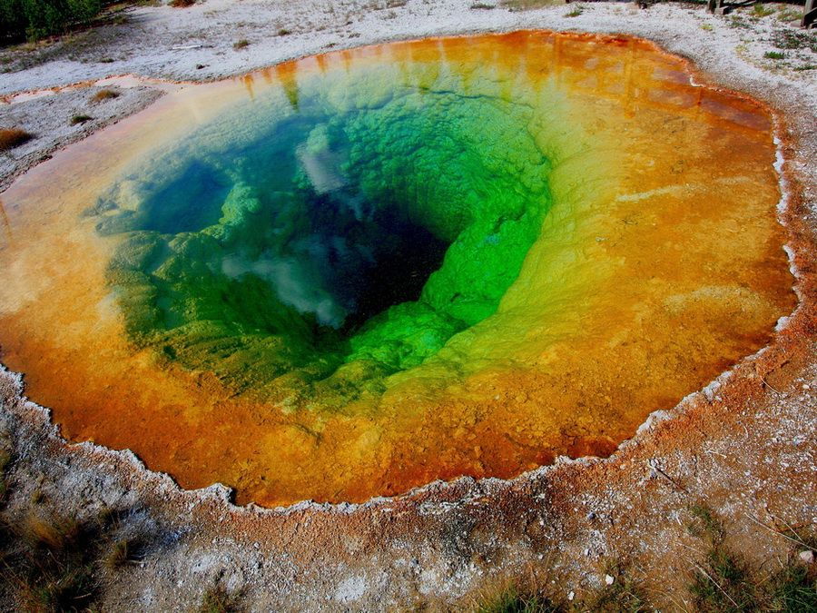

Ниагарский водопад
Самый знаменитый водопад мира, расположенный на реке Ниагаре, соединяющей два из Великих озер Эри и Онтарио на границе Америки и Канады. Высота его не очень значительна – всего около 50 метров, зато ширина (около 1200 м в общей сложности) и мощность водных потоков делает Ниагарский водопад очень интересным и красивым.
Пустыня Блек-Рок
В штате Невада в пустыне Блек-Рок расположено одно из самых уникальных природных объектов в Америке – геотермальные и вулканические образования, которые сформировались на фоне черного песка пустыни. Блек-Рок – это солончак, бессточное озеро 110 км. в длину и 32 км. – в ширину. Гейзер Флай – одно из уникальных образований в пустыне, своей потрясающе красивой многоцветностью он обязан минералам и водорослям в термальной воде.
Йеллоустоун
Йеллоустоун – один из самых крупных национальных парков Америки в штате Вайоминг. Популярность и уникальность этому месту обеспечили более 200 гейзеров, выпускающих клубы пара из серных источников.
Один из самых интересных и красивых термальных источников Йеллоустоуна – озеро Утренней Славы. Изначально вода в нем была лазурного цвета, но толпы туристов так засорили монетками и другим памятным мусором его жерло, что это вызвало неравномерное прогревание воды и образование на поверхности микроорганизмов, окрасивших кромку гейзера в желтый цвет.
Гранд-Каньон

Еще одно восхитительно красивое место в Америке – Национальный заповедник Гранд-Каньон в штате Аризона, самый большой речной каньон в мире. Для американцев и гостей страны предлагаются многочисленные экскурсии по заповеднику, самые лучшие из них – экскурсии на вертолете и сплав по Колорадо до места ее выхода на равнину.
Стеклянный пляж
Национальный парк Америки МакКерричер в Калифорнии гордится еще одной природно-рукотворным уникальным и красивым местом – Стеклянным пляжем. С 1949 г. территория пляжей была общественной свалкой до 1967 г. Через 30 лет, когда большая часть мусора разложилась, а океанские волны отшлифовали тонны разбитого стекла, на свет появился уникальный стеклянный пляж.
Пещеры ледника Менденхолл, штат Аляска
Ледник Менденхолл не самый большой на Аляске (всего 12 км), зато к нему довольно просто добраться — он находится всего в 20 км от столицы штата, города Джуно. Пещеры там начали формироваться не так давно, в 2012 году. Глобальное потепление заставляет ледник потихоньку таять, благодаря чему в пещерах образуются родники, а их внешний облик постоянно меняется.
Мост Золотые ворота в Сан-Франциско
Мост Золотые ворота нависает над одноименным проливом, соединяя Сан-Франциско и южную часть округа Марин. Несколько десятков лет мост сохранял звание самого большого висячего моста в мире. Его общая длина составляет 2737 м, а высота опор — 227 м над водой. Весит этот гигант 894,5 тыс. тонн. Мост считается одним из самых узнаваемых в мире — он мелькал в фильмах, сериалах, компьютерных играх и даже на эмблемах компаний.
Ущелье Ванонта, штат Орегон
Ущелье Ванонта является частью реки Колумбия. Высокие стены из древнего базальта покрыты множеством папоротников, мхов и лишайников. В ущелье произрастает огромное количество уникальных водных и лесных растений, благодаря чему местность пребывает под охраной Лесной службы США. На его территории также находятся четыре чудесных водопада.
Долина Скагит, штат Вашингтон
Долина Скагит раскинулась на севере США, возле канадской границы, между Тихоокеанским побережьем и Каскадными горами. В середине прошлого века там собирались построить две атомные электростанции, но вместо этого стали выращивать цветы. В 1984 году в долине прошел первый фестиваль тюльпанов. С того времени он проходит здесь ежегодно с 1 по 30 апреля и является одним из самых посещаемых в штате. Сейчас в этой местности также выращивают нарциссы и ирисы.